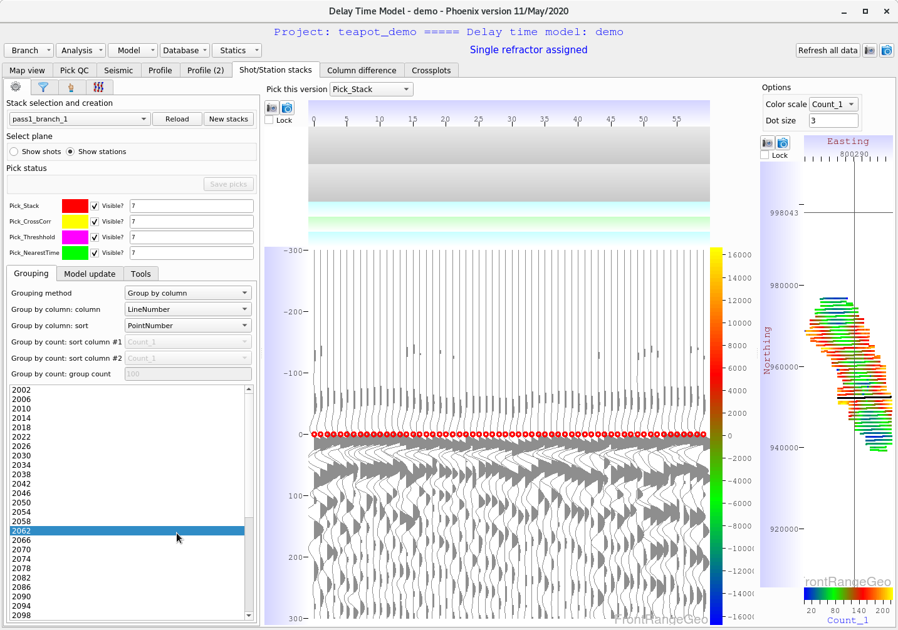

Delay Time models are frequently considered the bread and butter of geophysical near surface modeling. Delay Time modeling is extremely quick and easy in Phoenix, model updates and stacking speeds have been improved by orders of magnitude over competitive software like Flatirons.
It is easy to define any number of delay time models in Phoenix. This guide will cover creating a Delay Time model, updating it with picks, performing basic QC, and producing statics.
From the Merge Manager window, you can find the various model tabs at the bottom left of the screen. Select the “DT” (Delay Time) tab, and click “New”
A dialog will pop up to set the model parameters, such as name and node spacing. Select appropriate parameters and click “OK”
The initial model will be generated. Next, select the model and click “Open”.
Now you are in the main model window. From this window you can access the branch assignment, the profile view, create stacks, statics, and run updates.
Let’s define our branch. Find the top left tab “Branch”, and select “Open branch assignment dialog”
Click on a shot from the basemap to plot the picks by offset. By default the “Pick_User” column is selected. You can change this from the dropdown menu “Pick version” on the left.
Use the “Linear moveout velocity” slider bar on the left to adjust the moveout (Note: don’t forget to check the “Apply linear moveout” box).
When you have identified the branch, click and drag to assign it:
Click at various points on the basemap and repeat this process. When you are satisfied, simply close the window.
Now we will run a model update. Find the “Analysis” tab at the top left, and select “Standard analysis sequence”
A parameter dialog will pop up. Set the minimum # valid picks per shot/station (if # picks < this value, interpolation will be used). Select the Pick version, and set the Compression method to Linear compression unless you know what you are doing and want to use another compression option.
Delay time updates can be performed on the local machine, or distributed over MPI for large surveys. We recommend local machine for surveys < 500 Million traces, and MPI otherwise.
You can monitor the update from the Phoenix main window, or from the model window in the history log on the left in the “Map view” tab.
After the analysis update, we want to perform some QC before creating statics.
Navigate to the “Pick QC” tab:
Before you select a shot from the basemap, plot the delay time error to find areas of interest. At the bottom left basemap, select the “Options” tab:
Uncheck “Show Stations”. Find the “Color scale column” and select “Error_1” to color the basemap by the delay time error.
Now we can spot the areas of high error. Select a shot to plot its statistics.
The top plot shows pick time vs. offset of the model picks in blue, compared to user (or whatever picks have been selected) in red.
The second plot shows pick error (User-Model) as a function of offset.
The third plot shows pick error as a function of azimuth. You may spot a sine-wave like behavior here if your survey contains strong anisotropies.
We can also examine how well the delay time flattens the seismic data. Navigate to the “seismic” tab.
To select only the traces in our delay time branch, in the pick flow select “Add” \(\rightarrow\) “Trace selection” \(\rightarrow\) “Select traces using branch”.
Next, to apply the delay time model as a moveout, select “Add” \(\rightarrow\) “Moveout” \(\rightarrow\) “Apply delay time solution”.
It is possible to repick the survey from here if you wish.
Once you are satisfied, navigate back to the “Map view”.
Note that you can change the map view coloring by attribute with the “Select attribute” dropdown list on the left. In this example we plot Velocity_1 (the velocity of the first refractor):
Phoenix can stack entire surveys extremely rapidly. To create stacks, navigate to the “Shot/Station stacks” tab and select “New stacks”:
A dialog will pop up for stack parameters. A sample set of parameters is shown:
The stacks will be generated after you hit “OK”.
After the stacking completes, we can perform QC by checking how well the traces have been combined during the stacking process.
Modify the “Select plane” to “Show stations”.
We can group traces using various attributes. For now, modify the following parameters:
| Grouping method | Group by column |
|---|---|
| Group by column: column | LineNumber |
| Group by column: sort | PointNumber |
Now we can quickly examine the stack quality across the entire survey.

Users should carefully examine their stacks to find geometry busts, polarity flips, and other problems.
If you spot a polarity flip, mouse-over the trace and hit “p”.
(Note: You can adjust all the hotkeys from the hand tab underneath the Pick QC tab)
After fixing polarity errors, navigate to the “model update” tab and select “Update model polarities”:
We can manually repick the stacks using the hotkeys, but there are some options for automating the stack re-picking as well.
Under the “Tools” tab we can apply a threshhold autopicker, or an event picker. For now, let’s repick using the “Pick event nearest time”.
This will find the nearest event (such as a peak or trough) to the time value (usually 0, but you can change this to whatever value if you notice your delay time is biased to a non-zero value).
Click on “Compute picks” to launch a re-picking job on your stacks:
After the picks have finished, navigate to the “Model update” tab.
Select the “Pick version” to update the model (in our case, Pick_NearestTime), select the “Update percentage” (how much to adjust the model according to these picks), and finally click on “Update model delay times”.
Now that we have fixed some polarity and pick issues, we should create a new set of stacks.
Once again, select “New stacks” and set the parameters:
The stacking will be run again. Once it has completed, click “Reload” and select the new set of stacks:
Repeat this process until you are satisfied with the quality of your stacks.
Now that we have created our delay time model, updated it, and performed QC with stacks, we are ready to create and export statics.
To create a physical model, we must define a weathering velocity. Assign a weathering velocity to your model by clicking on the “Model” tab, and slecting “Shortcut - assign weathering velocity”:
We can examine our delay time model in profile slices by navigating to the “Profile” tab.
Drag out a line across the basemap to select a profile.
You can plot various model attributes by clicking on the top plots and changing which attributes are displayed:
Now that we have a physical model, we can compute statics.
From the “Statics” tab, set the Final datum, and the Intermediate datum.
Next, select “Statics” \(\rightarrow\) “Compute elevation statics”. Assign a replacement velocity.
Finally, select “Compute statics”.
Name your statics, select where to save them, the project, model (choose your current delay time model), and ensure that Statics_Elevation is selected for the Column.
Check “Tie statics” and hit OK.
After the statics have been computer, they can be exported.
Under the “Statics” tab, select “Export statics (all models within project!)”
Congratulations, your statics have been exported!